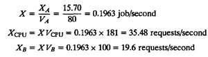
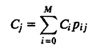
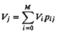
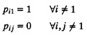
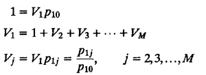
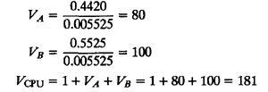
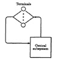

| Previous | Table of Contents | Next |
Since the jobs must visit the CPU before going to the disks or terminals, the CPU visit ratio is
VCPU =VA +VB + 1 = 181
The first step in operational analysis generally is to determine total service demands Di for all devices. In this case,
Using the forced flow law, the throughputs are

Using the utilization law, the device utilizations are
Visit ratios are one way of specifying the routing of jobs in a queueing network. Another way is to specify the transition probabilities pij of a job moving to the jth queue after service completion at the ith queue. The visit ratios and transition probabilities are equivalent in the sense that given one we can always find the other. In a system with job flow balance,

Here, subscript 0 is used to denote visits to the outside link. Thus, pi0 is the probability of a job exiting from the system after completion of service at the ith device. Dividing both sides of the equation by C0, we get

Since each visit to the outside link is defined as the completion of the job, we have
| V0 = 1 | (33.4) |
Equations (33.3) and (33.4) are called visit ratio equations and can be used to get visit ratios from transition probabilities. A unique solution is always possible provided the network is operationally connected, that is, each device in the system is visited at least once by each job.
In central server models, after completion of service at every queue, the jobs always move back to the CPU queue:

These probabilities apply to the exit and entrance from the system (i = 0) also. Therefore, the visit ratio equations become

Thus, we can find the visit ratios by dividing the probability p1j of moving to the jth queue from the CPU by the exit probability p10.

Little's law is also an operational law. In its derivation in Section 30.3, we used only operational (measurable) quantities. The only assumption required was that the number of arrivals is equal to the number of completions. This is the operationally testable assumption of job flow balance.
We can apply Little's law to relate queue length Qi and response time Ri at the ith device:
Qi = λ iRi
If the job flow is balanced, the arrival rate is equal to the throughput, and we can write
Qi = XiRi (33.5)
It is this version of Little's law that we will use frequently hereafter. Notice that the queue length Qi is synonymous with the number of jobs at the ith device. It includes not only the jobs waiting in the ith queue but also those getting service at the device.
XCPU = 35.48, XA = 15.70, XB = 19.6
QCPU = 8.88, QA = 3.19, QB = 1.40
All timesharing systems can be divided into two subsystems: the terminal subsystem and the central subsystem consisting of the remaining devices including the CPU, as shown in Figure 33.2. There is one terminal per user and the rest of the system is shared by all users.
It is interesting to note that Little's law can be applied to any part of the system. The only requirement is that the job flow in that part be balanced. In particular, it can be applied to the central subsystem, which gives
Q=XR
Here, Q is the total number of jobs in the system, R is the system response time, and X is the system throughput. Given individual queue lengths Qi at the devices, we can compute Q:
Q = Q1 + Q2 +...+ QM

FIGURE 33.2 Two components of a timesharing system: terminals and the central subsystem.
| Previous | Table of Contents | Next |
){kind=link}
){kind=link}